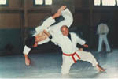

| JUTSU |
|
Go to that tree and practice your ju - JUTSU techniques on it.

|
| 技術 |
technique
★★★★☆
technique - used mostly with industry or artisans. |
| 美術 |
fine art
★★★☆☆
|
| 芸術 |
the arts
★★★☆☆
all the arts: not just modern art, but dance, music, performance, installations, puppetry. . . |
| 美術館 | |
| 魔術 |
sorcery
★☆☆☆☆
sorcery - has the connotation of illusions, fooling someone. |
| 手術 |
| Meaning | Hint | Radical | |
|---|---|---|---|
| 掛 | hang / halfway done | HAND | 手 |
| 衝 | collision | HEAVY | 重 |
| 街 | shopping district | TERMITE HILL |  |
| 術 | art / technique | WOOD | 木 |
Hang something with your HAND from a windowsill!
Colliding with a HEAVY thing is painful.
A shopping district as busy as a TERMITE HILL.
Technique of chopping WOOD fast is a skill.
 KANJIDAMAGE
KANJIDAMAGE